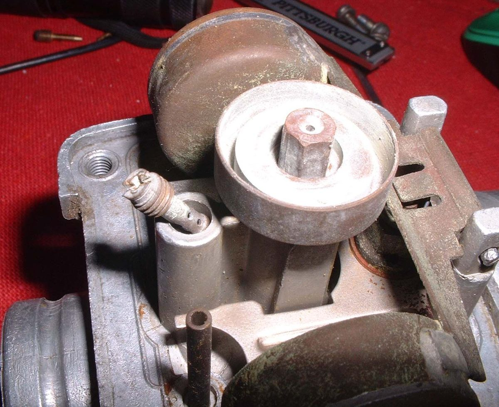
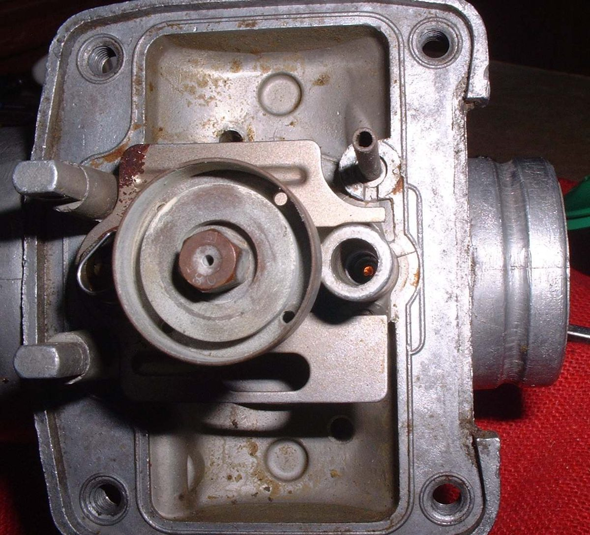
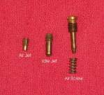
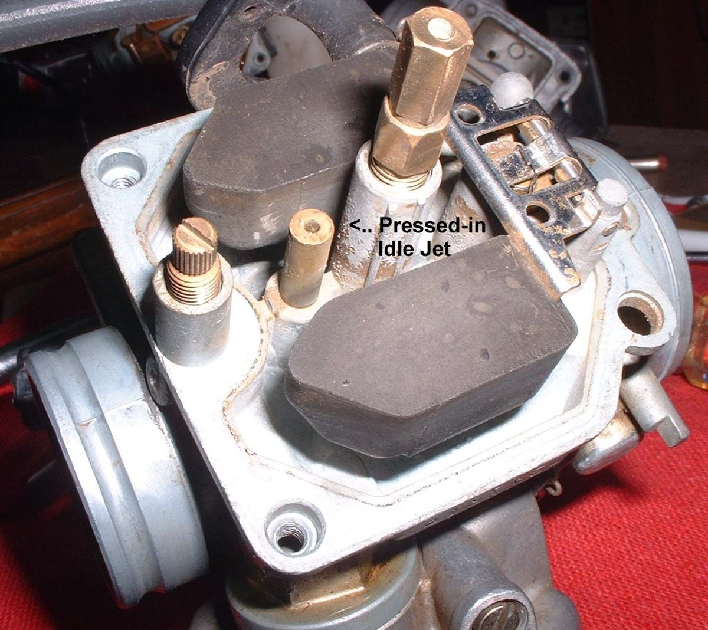

The idle circuit runs the engine from idle to about one quarter throttle. Its jet rarely needs changing. If the idle will not settle after cleaning and an air leak check, a different size can help. Make the change only for a reason, and change one thing at a time. There are many idle jet sizes, so use the maker's size table for your carburettor.
Safety
- Fuel is flammable. Turn the tap off and keep flames away.
- Do not run the engine at idle for long. It can overheat, especially air cooled.
You need
- The carburettor with the float bowl off. Look at the idle jet first. Some newer carburettors have a pressed-in idle jet, and it cannot be changed.
- The next size of jet from the carburettor maker.
- A new or freshly cleaned spark plug.
Steps
- Remove the old idle jet with a screwdriver that fits the slot well. Grind the tip if needed. A loose fit strips the jet.
- Fit the new size jet, snug but not tight. Refit the bowl and the carburettor.
- Set the idle screw to the manual's starting position. Many carburettors start near 1 to 1.5 turns out from lightly seated.
- Fit the clean plug. Start the engine and let it warm.
- Set the idle speed with the throttle stop screw, then turn the idle screw in or out for the smoothest idle. Repeat until the idle is smooth at the speed you want.
- Let the engine idle long enough to colour the plug, without overheating it. Then check the plug. See Read a spark plug.
- Check that the engine moves smoothly past one quarter throttle. If the idle or the plug colour is wrong, try the next size and repeat.
Check your work
- A steady, smooth idle at the manual speed with the engine warm.
- A smooth change from idle to just above one quarter throttle, with no stumble.
- A plug with the normal colour.
If it did not fix the problem
- Check for an air leak at the manifold: Test for an intake air leak.
- Check the valve clearances. Tight valves also affect the idle: Check valve clearances.
- Engine stalls at idle.